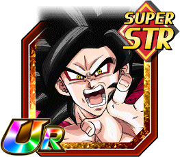
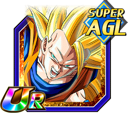
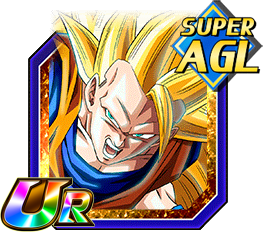

The character search bar is on the stats page, so just click on one of these characters and it will show up.
Featured Cards:
 

This website is wiki based on the mobile game Dokkan Battle.
Dokkan battle is mobile Dragon Ball puzzle game where you can collect cards of characters
that have appeared throughout the series, and level them up and awaken them to make them more powerful,
and take on hard boss fights or events in the game. In this wiki, you can search up characters and look at their stats.
NOTE: Not all characters may appear because of their rarity, or to save time.